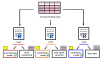
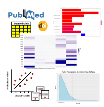
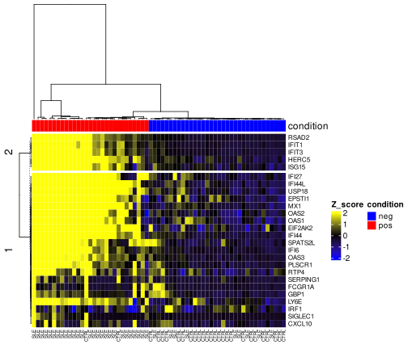
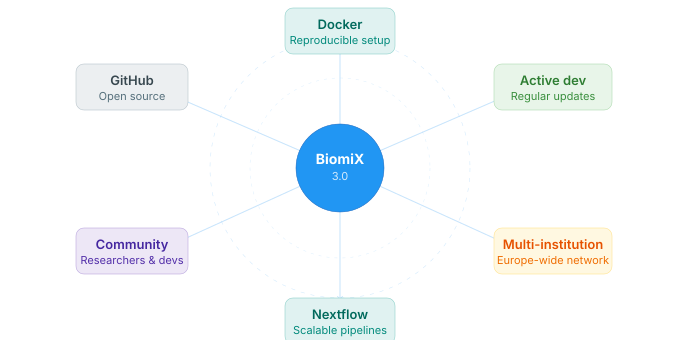

Single-omics analysis, just a click away
Customizable pipelines for transcriptomics, metabolomics, and methylomics. Choose your parameters and let BiomiX handle the analysis — so you can focus on the biology.


BiomiX 3.0 — Now available
A graphical desktop platform that makes state-of-the-art multi-omics analysis accessible without programming expertise.
Built on the same GUI philosophy, now with broader integration capabilities and simpler deployment.
SNF, NEMO, DIABLO, and PRAMIGO join MOFA to offer unsupervised, supervised, and graph-based strategies in a single interface.
No more manual dependency management. BiomiX 3.0 ships as a Docker container for a reproducible, one-command setup across all platforms.
Run scalable, reproducible analyses through integrated Nextflow workflows — from laptop to HPC cluster.

Once your integration is complete, BiomiX automatically runs pathway enrichment via EnrichR and retrieves relevant PubMed literature for each identified factor or component — turning statistical results into biological insight with a single click.

Five state-of-the-art integration methods — MOFA, SNF, NEMO, DIABLO, and PRAMIGO — are all accessible through the same graphical interface. No R, no Python, no command line. Just your data and your question.

BiomiX is an open-source project actively maintained by a multi-institution European consortium. Docker-based deployment guarantees that your analyses remain reproducible regardless of system updates, while an active developer and researcher community ensures the platform keeps growing.
Customizable pipelines for transcriptomics, metabolomics, and methylomics. Choose your parameters and let BiomiX handle the analysis — so you can focus on the biology.

Choose the method that fits your question — or run them all and compare.
BiomiX 3.0 installs via Docker — no dependency conflicts, no configuration.
# Pull and run BiomiX 3.0
docker pull ghcr.io/biomix-consortium/biomix:3.0
docker run -p 8080:8080 \
-v /path/to/your/data:/data \
ghcr.io/biomix-consortium/biomix:3.0Supports Linux, Windows, and macOS. Full instructions on the Installation page.
If you use BiomiX in your research, please cite our publication in BMC Bioinformatics. A manuscript describing BiomiX 3.0 is currently under review.
Read paper (v1) ↗Iperi C. et al. BiomiX, a user-friendly
bioinformatic tool for democratized analysis
and integration of multiomics data.
BMC Bioinformatics 26, 8 (2025).
doi: 10.1186/s12859-024-06022-y